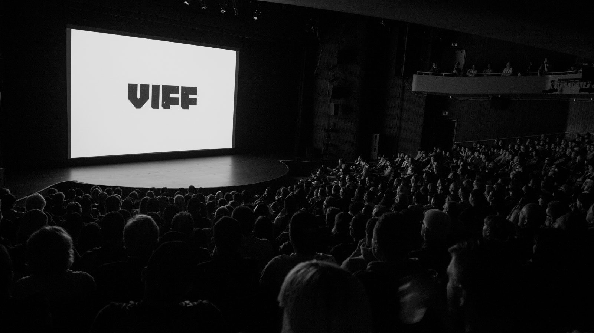
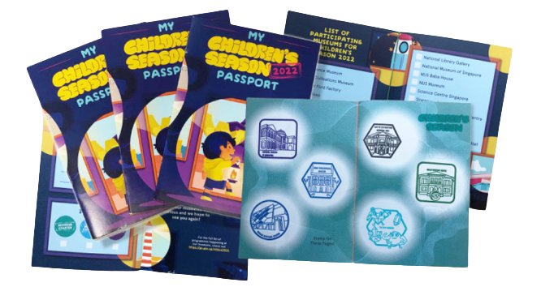
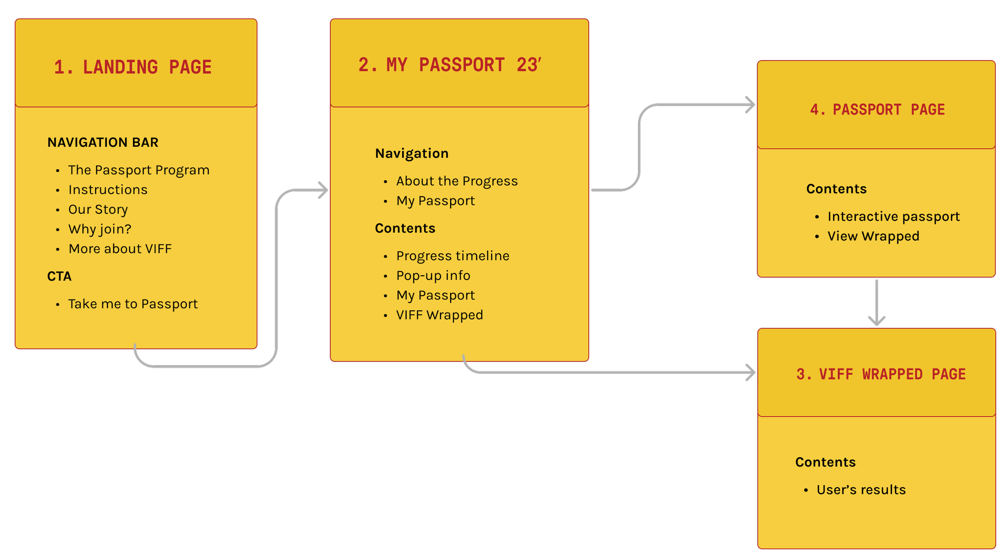
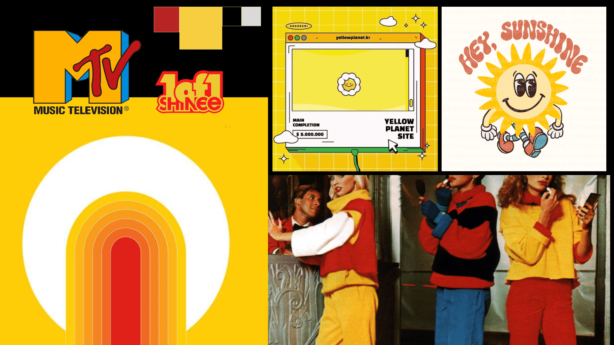
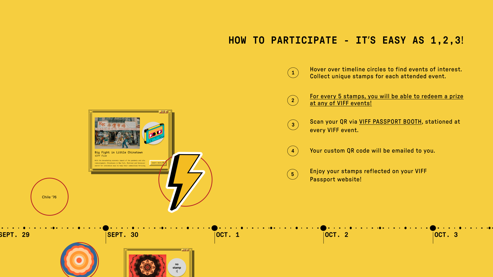
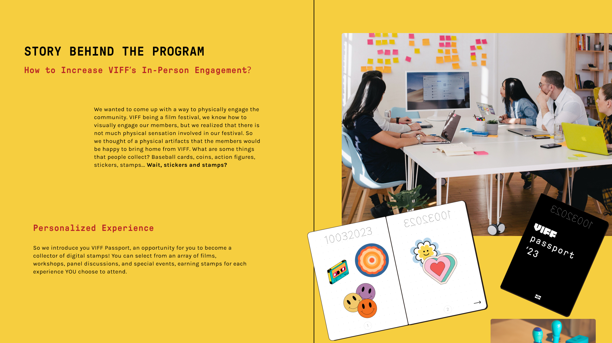

Digital Passport Program
Interaction Design / Web Design
Team
Jae Eun Kim
Md Safwat Qurib Ifti
Kate Luong
Annie Vo
Timeline
June 2023 - July 2023
My Role
User Research
Content Strategy
Visual Design
Tools
Figma
Project Overview
Enhancing in-person VIFF experience through an interactive microsite
This project was completed for the Information Design course at Simon Fraser University. Our team was tasked to propose a digital intervention for a local non-profit organization. The goal of this project was to pick a client, identify an existing problem that the client is currently facing, and come up with a design proposal to address this issue.
Final Product
Our final product includes a Digital Passport microsite with various interactive features (VIFF Passport and VIFF Wrapped) designed in Figma to help Vancouver International Film Festival (VIFF) enhance in-person experience for the younger community and bring Gen Z attendees together in the digital era.
View PrototypeOur Client
Vancouver International Film Festival
After conducting thorough primary and secondary research, I proposed Vancouver International Film Festival to be our client for this project. Based on my findings, the internet has vastly changed the film exhibition industry over the past two decades, and fundamentally shifted the role of festivals. According to VIFF’s Strategic Plan (2021-2023), they are currently at risk of becoming outdated and uncompetitive due to lack of digital infrastructure.
Findings
Research Process
Based on our secondary research, there has been a decline in interest in attending in-person events like Vancouver International Film Festival, especially for younger generations. According to a 2020 report on the Sundance Film Festival, 27% of the audience was aged 26-35, 18.3% were between 18 and 25, and only 0.3% were under 18. To address this issue, our team decided to create a microsite that will target Gen Z, who are at the forefront of cultural trends and adept at navigating technology. By focusing on this demographic and emphasizing in-person engagement, VIFF can potentially expand its audience base.
Design Focus
How can we enhance in-person festival experience for the younger community and bring them together in this digital era where organic connections are often lost?
Our Idea
Digital Passport Program
Children’s Passport at National Museum of Singapore
Our team came up with a Digital Passport idea. Taking inspiration from the National Museum of Singapore where visitors collect stamps as proof of in-person presence, we thought that Vancouver International Film Festival could benefit from a similar strategy. We wanted to modernize the process by introducing a digital passport and stamps collected through scanning a custom QR code during any in-person event at VIFF.
Content Strategy
As a starting point, I suggested creating a dedicated landing page that users would visit before accessing the main Digital Passport page. This approach would provide a better overview of the Digital Passport Program and prevent confusion for first-time users.
Sitemap
After visiting the landing page, users can navigate to the Digital Passport page (My Passport 23’) to view featured VIFF events. Once they log in or register for the program, they can start collecting digital stamps by attending the in-person events listed on the site. Aside from the Digital Passport, we have decided to add a new functionality called VIFF Wrapped in order to enhance overall experience. Inspired by Spotify, VIFF Wrapped is a data analysis tool that compiles insightful statistics based on the films and events attended by users throughout the festival. This personalized analysis offers users a unique perspective on their cinematic preferences.
Design
Art Direction
Moodboard
During our design process, we selected the color scheme and typeface based on our research and the overall feel we wanted to achieve. Additionally, I created custom moodboards to assist us in making further design decisions. The moodboard aligned with the playful and childlike aesthetic we wanted to explore for our microsite. We also chose Karla as one of the main typefaces as it brings a unique character through imperfections and stands out with its quirky charm.
Final Mockups
Landing Page
As a team, we collaborated on the final microsite design. I proposed the idea of incorporating a storytelling element into the landing page. Now, we present information in a structured manner, with sections explaining the participation process, merchandise prizes, and the program's backstory.
 Digital Passport Program Page (My Passport 23’)
The Digital Passport Program page allows horizontal scrolling to view the timeline. Each circle represents a corresponding event at Vancouver International Film Festival 2023. On click, circles display a pop-up window (designed in an old browser style) with detailed information and a stamp (if collected) or a stamp placeholder (if not collected).
VIFF Passport & VIFF Wrapped
At the end of the timeline, users can navigate to the VIFF Digital Passport to view all stamps and VIFF Wrapped to see a custom data analysis based on attended events. Both pages are encouraged to be shared on social media in order to help generate more buzz online.
Takeaways
What Did I Learn?
This project provided a valuable learning experience in several aspects. First and foremost, it taught me the importance of effective teamwork through collaborative efforts. The project's fast-paced nature, with weekly deliverables and presentations, challenged me to manage my time efficiently while engaging in frequent brainstorming sessions. This experience has greatly contributed to my growth as a designer, enhancing my skills in interaction design and emphasizing the significance of empathy in user-centered design. While satisfied with the project's outcome, I recognize the potential for improvement in my approach. For instance, I would implement a more structured schedule, allocating dedicated time slots for research and design phases. This strategic planning could help promote a more balanced and well-paced progression throughout the project.